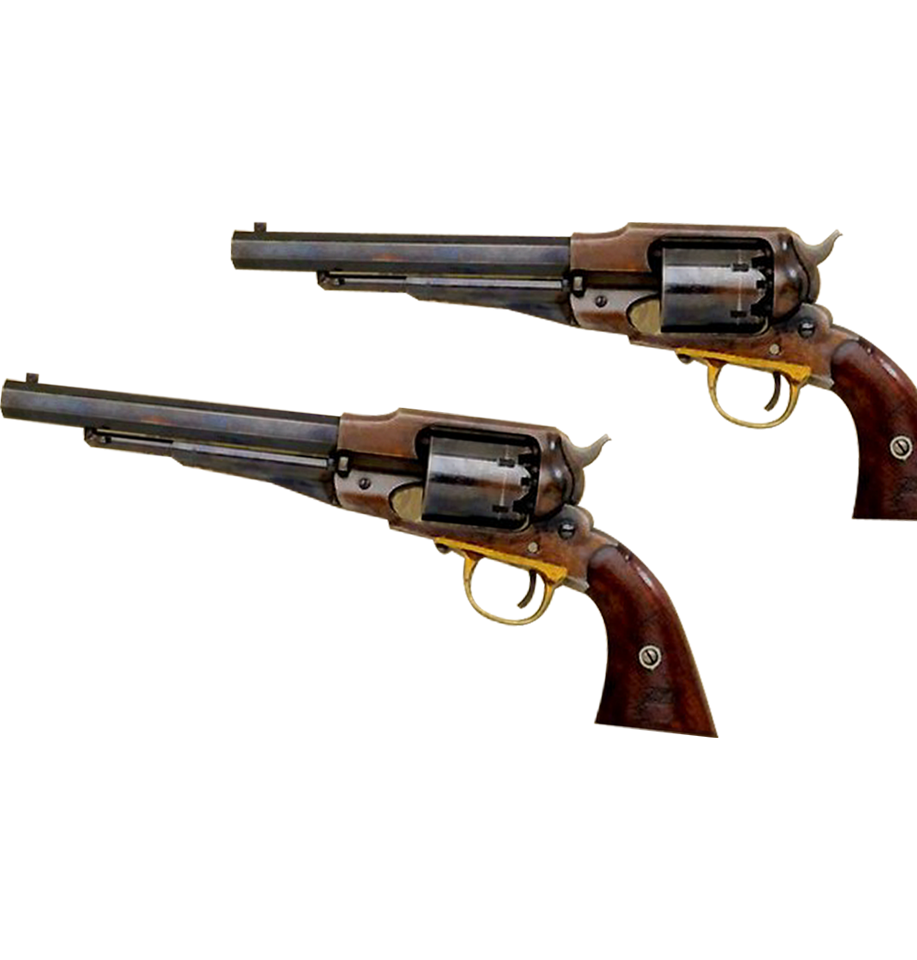
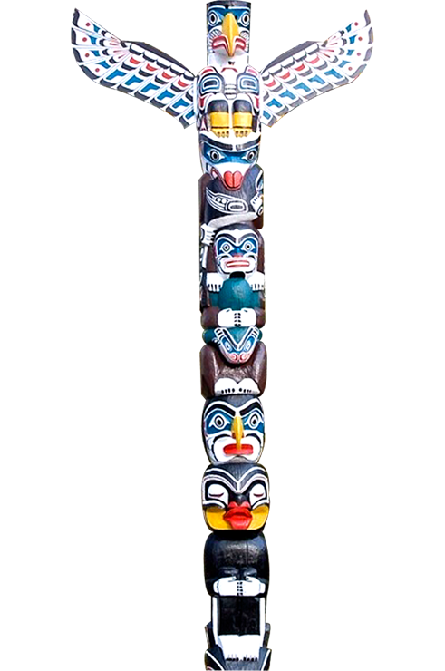
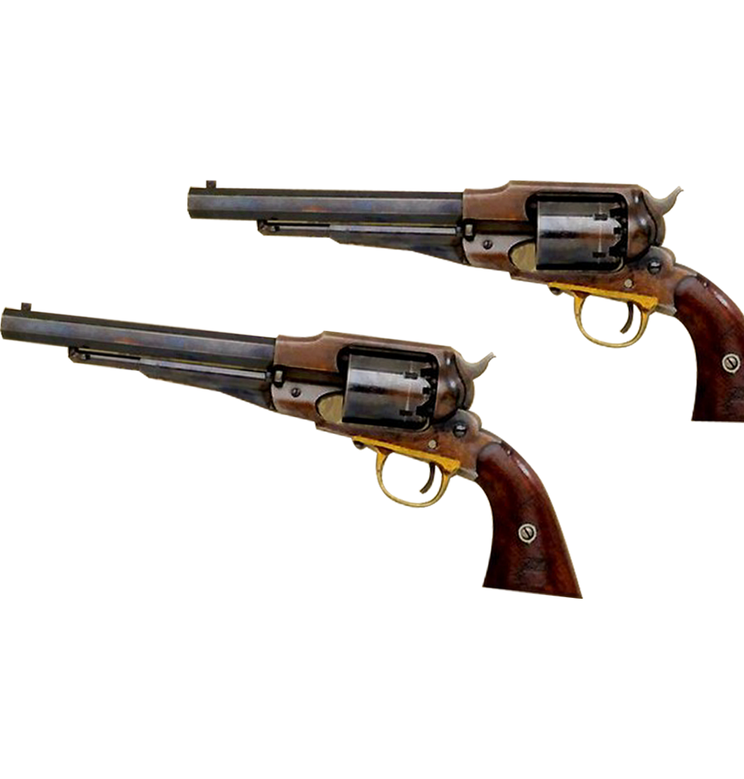
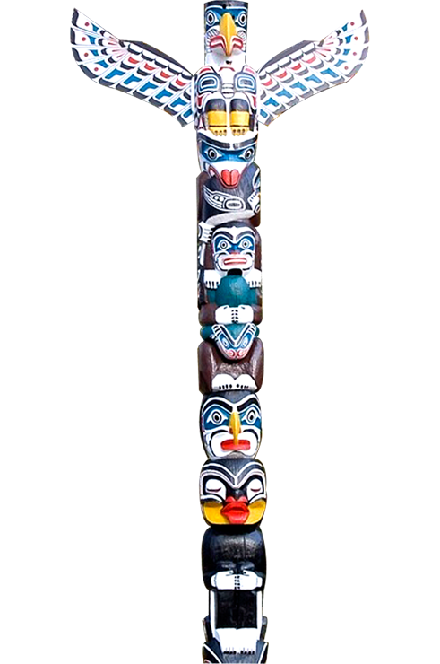
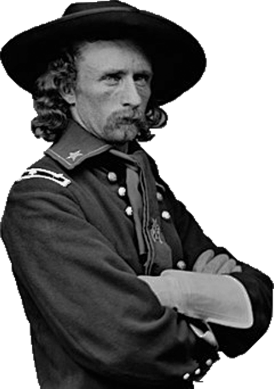
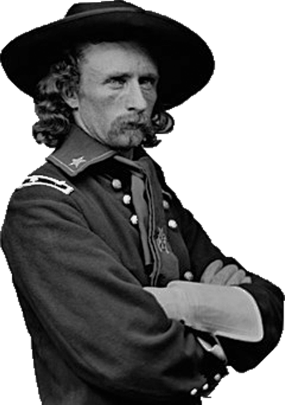

우리가 땅을 팔지 않으면 백인들이 총을 들고 와서
언젠가 우리 땅을 빼앗을 것임을 우린 알고 있다
하지만 우리는 이해 할 수가 없다
저 하늘과 우리가 밟고 있는 땅의 온기
공기의 신선함과 반짝이는 물을
우리가 소유하고 있지 않은데 어떻게 팔 수 있단 말인가?
 



리틀빅혼 전투
1876년 6월 25일 ~ 6월 26일
웅크린 황소와 성난 말이 이끄는
수-샤이엔 연합
VS
조지 암스트롱 커스터 중령이 이끄는
미군 제 7 기병대
부족으로 나뉘어져 있던 인디언들은 서로 힘을 합쳐 함께 싸웠고
조지 커스터 중령과 7기병연대는 이 전투에서 전멸했다.
미국에서 인디언이 거둔 최후의 승리였다.
인디언들은 자신들이 크게 이겼으니 백인들이 물러갈 줄 알았다.
오히려 미군은 복수하겠다며 대규모의 병력으로 공격해왔다.
대승리 후 흩어져버린 인디언들은 미군에게 패하기 시작했다
결국 인디언 대부분은 미국 정부에 항복하고 말았다.
 
